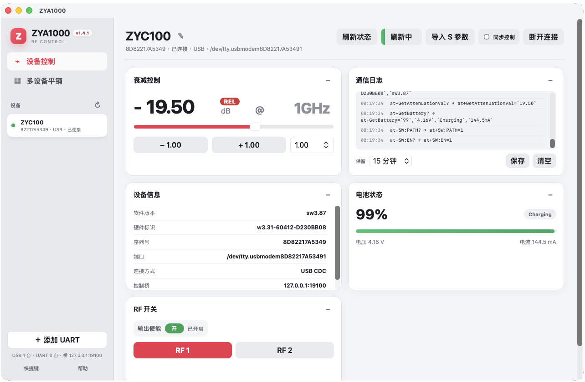
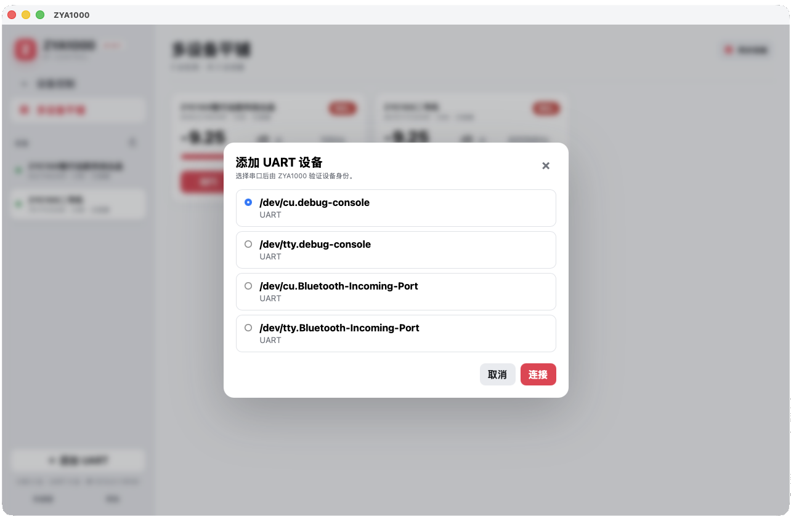

1. 产�概述
ZYA1000 是用� ZYC100 �制器 的桌�上�机软件，�� ZYE660 衰�模��完�日常衰��制�批�设备管���入�耗补�和自动化测试。软件基� Rust + Tauri �建，支� macOS 和 Windows，通过 USB CDC 或 UART 串��设备通信。
日常�制��设备�直�设置衰��RF 通��输出使能和设备别�。
测试æ��效支æŒ�多设备平铺ã€�å�Œæ¥æ�§åˆ¶ã€�通信日志和补å�¿æ•°æ�®ç®¡ç�†ã€‚
自动化集��供 TCP �制桥�JSONL �议�时间线�程和高速波形扫�。
1.1 æ ¸å¿ƒåŠŸèƒ½ä¸€è§ˆ
| 功能模� | 说� |
|---|
| 设备自动�� | 自动扫�并�� VID 0x0483 / PID 0x5740 的 USB CDC 设备 |
| 手动 UART | 支�手动选择串�，固定 115200 波特�，UART 默认�用 RF 开关 |
| è¡°å‡�æ�§åˆ¶ | 范围 0.00–31.75 dB，0.25 dB æ¥è¿›é‡�化，支æŒ�滑æ�¡/滚轮/ç›´æ�¥è¾“å…¥ |
| RF æ�§åˆ¶ | RF1/RF2 通é�“切æ�¢ã€�输出使能开关ã€�å�Œæ¥æ�§åˆ¶ |
| 多设备管ç�† | 平铺视图ã€�设备别å��ã€�å�³é”®æ“�作ã€�拖动æ�’åº�ã€�批é‡�åˆ é™¤ |
| �入�耗补� | 支� CSV 查找表�多项�公��Touchstone S2P 文件导入，REL/TRU 模�切� |
| 通信日志 | 带时间戳的完整通信记录，自动覆盖ã€�本地ä¿�å˜ |
| 外部æ�§åˆ¶æ¡¥ | TCP 127.0.0.1:19100，支æŒ� AT 指令é€�ä¼ å’Œ JSONL å��è®® |
| 自动化测试 | 独立窗�，时间线�程�循�����高速扫��多�置管� |
 �动页：打开软件���这里进入设备�制�上�机功能和常用工具。
�动页：打开软件���这里进入设备�制�上�机功能和常用工具。
1.2 系统�求
| 平� | �求 |
|---|
| macOS | macOS 11 (Big Sur) �以上，Apple Silicon 或 Intel 处�器 |
| Windows | Windows 10/11 x64，需安装 WebView2 Runtime（通常系统已内置） |
| USB 驱动 | macOS �驱；Windows 需安装 STM32 Virtual COM Port 驱动 |
2. 安装��动
安装完æˆ�å��，建议先完æˆ�一次“å�¯åŠ¨è½¯ä»¶ - è¿�æ�¥è®¾å¤‡ - 查询身份 - 设置衰å‡�â€�的基础æµ�程。确认基础通信æ£å¸¸å��，å†�使用补å�¿ã€�å�Œæ¥æ�§åˆ¶å’Œè‡ªåŠ¨åŒ–测试功能。
2.1 macOS 安装
- ��布页�下载
ZYA1000.dmg ç£�ç›˜æ˜ åƒ�文件。
- å�Œå‡»æ‰“å¼€ DMG，将 ZYA1000 å›¾æ ‡æ‹–å…¥ Applications 文件夹。
- 首次打开时，若系统æ��示"æ— æ³•éªŒè¯�å¼€å�‘者"，请å‰�å¾€ 系统设置 → éš�ç§�ä¸�安全性，点击"ä»�è¦�打开"。
- å�¯åŠ¨å��，macOS è�œå�•æ �将显示完整的"设备 / 视图 / 工具 / 帮助"è�œå�•ã€‚
2.2 Windows 安装
- 下载
ZYA1000_Setup.exe 安装程�或��� ZYA1000.zip。
- �行安装程�，按照�导完�安装。
- 如�使用���版本，解��直��行
ZYA1000.exe ��。
- 首次è¿�è¡Œå‰�ç¡®ä¿� ZYC100 设备已通过 USB è¿�æ�¥ï¼Œä¸”驱动已æ£ç¡®å®‰è£…。
3. 主界�概览
ZYA1000 主界é�¢é‡‡ç”¨å�Œæ �布局：左侧用äº�选择视图和管ç�†è®¾å¤‡ï¼Œå�³ä¾§æ˜¾ç¤ºå½“å‰�设备的æ�§åˆ¶å�¡ç‰‡ã€‚åˆ�次使用时，å�ªéœ€è¦�关注左侧设备列表和å�³ä¾§è¡°å‡�æ�§åˆ¶å�¡ç‰‡å�³å�¯ã€‚

设备æ�§åˆ¶é¡µï¼šå�³ä¾§æŒ‰å�¡ç‰‡ç»„织衰å‡�ã€�RFã€�设备信æ�¯ã€�通信日志ç‰å†…容。
界�主�区域说�：
- å“�牌区：左上角显示 ZYA1000 æ ‡è¯†å’Œç‰ˆæœ¬å�·ã€‚
- 视图切æ�¢ï¼š"设备æ�§åˆ¶"显示当å‰�选ä¸è®¾å¤‡çš„详细æ�§åˆ¶é¡µï¼›"多设备平铺"以å�¡ç‰‡å½¢å¼�展示全部在线设备。
- 设备列表：列出所有已��和离线设备，绿色圆点表示在线，�色表示离线。点击切�设备。
- 底部æ“�作：å�¯æ‰‹åŠ¨æ·»åŠ UART 设备，查看扫æ��状æ€�，进入快æ�·é”®å’Œå¸®åŠ©é¡µé�¢ã€‚
- 主内容区：显示当å‰�设备的衰å‡�æ�§åˆ¶ã€�ç”µæ± ã€�RF 开关ã€�设备信æ�¯å’Œé€šä¿¡æ—¥å¿—ç‰å�¡ç‰‡ã€‚å�¡ç‰‡å�¯æ‹–åŠ¨æ ‡é¢˜æ �交æ�¢ä½�置，也å�¯æŠ˜å� 。
阅读建议：如æ�œå�ªå�šå�•å�°è®¾å¤‡æ�§åˆ¶ï¼Œè¯·é‡�点阅读第 4ã€�5ã€�10 ç« ï¼›å¦‚æ�œè¦�批é‡�测试，请继ç»é˜…读第 8ã€�11ã€�12 ç« ã€‚
4. 设备��
4.1 USB 自动��
ZYA1000 å�¯åŠ¨å��自动扫æ�� VID 0x0483 / PID 0x5740 çš„ USB CDC 设备。检测到 ZYC100 设备å��ä¼šè‡ªåŠ¨åŠ å…¥è®¾å¤‡åˆ—è¡¨ï¼Œæ— éœ€æ‰‹åŠ¨æ“�作。
侧边æ �底部显示扫æ��状æ€�，点击刷新按钮 ↻ å�¯æ‰‹åŠ¨è§¦å�‘é‡�新扫æ��。
4.2 æ‰‹åŠ¨æ·»åŠ UART 设备
- 点击侧边æ �底部的 ＋ æ·»åŠ UART 按钮。
- 在弹出的对è¯�框ä¸é€‰æ‹©å¯¹åº”的串å�£ï¼ˆmacOS 下如
/dev/tty.usbmodem*，Windows 下如 COM3）。
- 点击 ��，ZYA1000 将自动验�设备身份。

æ·»åŠ UART：选择串å�£å��点击è¿�æ�¥ï¼Œè½¯ä»¶äÛİ·¶‰��Ëkºw�µçb�«–*£š>C–>X�LÈă–>�šVÖæÛš2'¦ŠG�:��êÿš�Ÿš>K–�ó���šR¿š2�������5�ƒ–J0�I$ƒš‚ó–ò?���ğ½Ñ�øğ½ÑÈø4(ğ½Ñ…‰±”ø4(4(ñ™¥�ÕÉ”��±…ÍÌô‰Í�É••¹Í¡½Ğˆø4(ñ¥µœ�ÍÉŒô‰…ÍÍ•Ñ̽éå„ÄÀÀÀµÍ�É••¹Í¡½Ñ̽éå„ÄÀÀÀµ�½µÁ•¹Í…Ñ¥½¸µÍ•ÑÕÀµ�ÕѽÕеØĹÁ¹œˆ�…±Ğô‹¢†Ã–�?–f£š>K–�—š6¢�_¢†—–�ÿ¢ºû�ö¸ˆø(€€ñ™¥��…ÁÑ¥½¸û¢†—–�ÿ¢ºû�ö»¾òk–>¿–¾ó–�”�
M[���LÉ@ƒš"[¢úO–�—–�³–ò?¾ò3¢ö¿’îÛ’òkš2'–öO–&7¦ŠG�:�¢º‡�º_¢†—–�ÿ–�ó���𽙥��…ÁÑ¥½¸ø4(𽙥�ÕÉ”ø4(4(ñ‘¥Ø��±…ÍÌô‰¹½Ñ”ˆø4(€€ñÍÑɽ¹œû¢š��n[¢¶›–F+¾òhğ½ÍÑɽ¹œû–š�šzs–öO–&7¢ºû–’�–ŞËšr'¢†—–�ÿšVÚ6»¾ò3¦�7šZÖ¾ó–�—–&7’òkšbû�’뢚��n[¢¶›–F+���¢š��n[–B;–:¦�7�ö»š^ƒšÎW¢�«–*£š�‹–’7���4(𽑥Øø4(4(ñ Ìøä¸Èƒ–"�š6‹–"À�QITƒš¢‡–ò<ğ½ Ìø4(ñÀû–¾ó–�—¢†—–�ÿšVÚ6»–B;¾ò3�
ç–�ì�I�0ƒš‚��¶û–"�š6‹–"À�QITƒš¢‡–ò?����Îï�î–òç–�ë�†»¢º“š†�¾ò3šbû�’ë¾òhğ½Àø4(ñÕ°ø4(€€ñ±¤ûšVÚ6»šv—šêC¾ò!
MX€¼�LÉ@€¼ƒ–�³–ò?¾ò$𽱤ø4(€€ñ±¤û¦�7�ö»šZ�’îۢ޿–ú�𽱤ø4(€€ñ±¤û–öO–&7¦ŠG�:�𽱤ø4(€€ñ±¤û¢†—–�ÿ–�ğ𽱤ø4(ğ½Õ°ø4(ñÀû�†»¢º“–B;¾ò3’âÖ�?šbû�’ë–Â�–"�š6‹’âè�QITƒš¢‡–ò?¾ò#�îÿ¢&Ëš‚�¢¾�¾ò'¾ò3¢ºû–’�¦�k¢ş�–>3–>�šVÀ��Pƒš2�’î“–B3š¶—š:Ÿ–"Û¢†Ã–�?–�ó–J3�r–º{–�ó���ğ½Àø4(4(ñ™¥�ÕÉ”��±…ÍÌô‰Í�É••¹Í¡½Ğˆø4(ñ¥µœ�ÍÉŒô‰…ÍÍ•Ñ̽éå„ÄÀÀÀµÍ�É••¹Í¡½Ñ̽éå„ÄÀÀÀµ�½µÁ•¹Í…Ñ¥½¸µ‘¥ÍÁ±…äµ�ÕѽÕеØĹÁ¹œˆ�…±Ğô‹¢†—–�ÿš>Kš6–B;�j��QITƒšbû�’èˆø(€€ñ™¥��…ÁÑ¥½¸ùQITƒšbû�’ë¾òk–B¿�R£¢†—–�ÿ–B;¾ò3�V3¦v‹’òkšbû�’ë�r–º{¢†Ã–�?�n»š‚�–J3–¾ç–êS¢†—–�ÿ�*Ûš�����𽙥��…ÁÑ¥½¸ø4(𽙥�ÕÉ”ø4(4(ğ„´´�
¡…ÁÑ•È€ÄÀ€´´ø4(ñ È�¥�ô‰� ÄÀˆøÄÀ¸ƒ¦�k’ş‡š^—–ş\ğ½ Èø4(4(ñ ÌøÄÀ¸Äƒš^—–ş_š~—�r,ğ½ Ìø4(ñÀû¦�k’ş‡š^—–ş_�R£’ê;š:Kš~—¢ş{š:—–J3š:Ÿ–"Û¦^»¦Šc���š¾?š²‡�
ç–�ïš2'¦J»���’ş»šR碆Ö�?š"[¢�«–*£–"ßšZâºû–’��*Ûš��š^Û¾ò3¢ö¿’îÛ¦�÷’òk¢ºÃ–öW–¾ç–êS�j���Pƒš2�’î“–J3¢ºû–’�–n{–’7���ğ½Àø4(ñÕ°ø4(€€ñ±¤øñÍÑɽ¹œû–>G¦��š2�’òhğ½ÍÑɽ¹œû’ñ�½‘”øøğ½�½‘”øƒ–&7�ò�šbû�’è𽱤ø4(€€ñ±¤øñÍÑɽ¹œûš:—šRÛ–n{–’7¾òhğ½ÍÑɽ¹œû’ñ�½‘”øğğ½�½‘”øƒ–&7�ò�šbû�’è𽱤ø4(€€ñ±¤ûš¾?šv‡š^—–ş_¦f�–⛚r³–rÚ^Û¦^Óš"Ì𽱤ø4(€€ñ±¤û¢�«–*£šîk–*£–"Úr�šZâºÃ–öT𽱤ø4(ğ½Õ°ø4(4(ñ ÌøÄÀ¸Èƒš^—–ş_’şw�Vg¢ºû�ö¸ğ½ Ìø4(ñÀûš^—–ş_’şw�Vgš^Û¦Vÿ–>¿¢ºû�ö»’âè€ñÍÑɽ¹œø×–"�¦J|€¼€Ä×–"�¦J|€¼€Ç–Â?š^Ø€¼€ÈÓ–Â?š^Øğ½ÍÑɽ¹œû¾ò3¢Ú�¢ş�¢ºû–ºkš^Û¦Vÿ�j�š^—–ş_¢�«–*£šâ��B����¦��–B#¦Vÿš^Û¦^Ó¢şC¢†3–rëšf¿’â/š:Ÿ–"Û–��–¶c’öÿ�R£���ğ½Àø4(4(ñ ÌøÄÀ¸Ìƒ’şw–¶cš^—–ş\ğ½ Ìø4(ñÀû�
ç–�ïš^—–ş_–6‡�&�–êW¦�£�j�€ñÍÑɽ¹œû’şw–¶`ğ½ÍÑɽ¹œøƒš2'¦J»¾ò3¦�k¢ş��Îï�î–>›–¶c’â떾碾wš†�¦�'š.§’şw–¶c’ö7�ö»–J3šZ�’îÛ–B7���¦îc¢º“�n»–öW’âè€ñ�½‘”ù�½�Õµ•¹Ñ̽ie�ÄÀÀÀ½±½�Ìğ½�½‘”û���ğ½Àø4(4(ñ ÌøÄÀ¸Ğƒ¢�«–*£–"ßšZÀğ½ Ìø4(ñÀûš¾?’â«¢ºû–’�–>¿�.³�®/¦�7�ö»¢�«–*£–"ßšZÖò�–�Ï–J3–"ßšZæ^Ó¦jS���–ò�–B¿–B;¾ò1ie�ÄÀÀÀƒš2'¢ºû–ºk¦^Ó¦jS¢�«–*£š~—¢¾‹¢ºû–’��*Ûš��¾ò#�Rךƃ�¶'¾ò'¾ò3šnÓšZÃ�V3¦v‹šbû�’ë���–�Ϧ^·–B;’â7–�7–B;–>Ú~—¢¾‹¾ò3–�?–ÂG’âË–>�¦�k’ş‡¢Ò¢ö÷���ğ½Àø4(4(ğ„´´�
¡…ÁÑ•È€ÄÄ€´´ø4(ñ È�¥�ô‰� ÄĈøÄĸƒ–’[¦�£š:Ÿ–"Ûš†”€¡Q
@� É¥‘�”¤ğ½ Èø4(4(ñÀùie�ÄÀÀÀƒ–B¿–*£–B;¢�«–*£–r£šr³šrë–ò�–B¼�Q
@ƒš:Ÿ–"Ûš†—šr7–*‡¾ò3�nG–B°€ñ�½‘”øÄÈܸÀ¸À¸ÄèÄäÄÀÀğ½�½‘”û����²³’â'šZç�¢/–ê?¾ò#–š��1…‰Y%�_���AåÑ¡½¸ƒ¢�kšr³���¢�«–*£–2[šÖ/¢¾Wš†�šzÛ¾ò'–>¿¦�k¢ş�š¶“�®¿–>�š:Ÿ–"Ø�ie�ÄÀÀƒ¢ºû–’����ğ½Àø4(4(ñ ÌøÄĸÄ��Pƒš2�’�?’ò€ğ½ Ìø4(ñÀû�nÓš:—–>G¦��–�³–ò���Pƒš2�’î“¢†3¾ò3šr«š2�–ºk¢ºû–’�š^Û¦îc¢º“’öÿ�R£�²³’â�–>Ör£�êÿ¢ºû–’�¾òhğ½Àø4(4(ñÁÉ”øñ�½‘”ù…Ğ
½¹¹•�Ğü4)…ĞM•Ñ�ÑÑ•¹Õ…Ñ¥½¹Y…°õ€ÄÀ¸ÈÕ€4)…Ğ�•Ñ …ÑÑ•Éäüğ½�½‘”øğ½ÁÉ”ø4(4(ñ ÌøÄĸȃ–’k¢ºû–’�–¾ï–v�ğ½ Ìø4(ñÀûšR¿š2�–’k��7¢ºû–’�¦�'š.§–f£¢¾·šÎW¾ò3�Êû�†»š2�–ºk�n»š‚�¢ºû–’�¾òhğ½Àø4(4(ñÁÉ”øñ�½‘”øŒ�ie�ÄÀÀÀƒ–��¦� �•ä4)éå„é‘•ØõM�I%�0í…Ğ�•Ñ …ÑÑ•Éäü4(4(Œƒš2�–ºk�®¿–>�–B44)éå„éÍ•¹�õÕ͈éM�I%�0í…ĞM•Ñ�ÑÑ•¹Õ…Ñ¥½¹Y…°õ€ÄÀ¸ÈÕ€4(4(Œ�M
A$ƒ¦�;š‚ğ4)ie�ÄÀÀÀèéM�I%�0èé%9MQH�…Ğ
½¹¹•�Ğü4(4(Œƒ�~·–B;�ò�¾ò#’â7–�Ë�ª�š^Û–>¿�R£¾ò$4)idéM�I%�0�…Ğ�•Ñ�ÑÑ•¹Õ…Ñ¥½¹Y…°üğ½�½‘”øğ½ÁÉ”ø4(4(ñ ÌøÄĸÌ�)M=90ƒ–6?¢º¸ğ½ Ìø4(ñÀûš¾?¢†3’â�’â¨�)M=8ƒ¢¾ßšÆ�¾ò3šR¿š2��îOšz�–2[’ê“’êK¾òhğ½Àø4(4(ñÁÉ”øñ�½‘”ùì‰�µ�ˆè‰¡•±±¼‰ô4)ì‰�µ�ˆè‰±¥ÍЉô4)ì‰�µ�ˆè‰Í•¹�ˆ°‰…Ј艅Ğ
½¹¹•�Ğü‰ô4)ì‰�µ�ˆè‰Í•¹�ˆ°‰‘•Ù¥�”ˆè‰M�I%�0ˆ°‰…Ј艅ĞM•Ñ�ÑÑ•¹Õ…Ñ¥½¹Y…°õ€ÄÀ¸ÈÕ€‰ôğ½�½‘”øğ½ÁÉ”ø4(4(ñÑ…‰±”ø4(€€ñÑÈøñÑ û–F÷’î�ğ½Ñ øñÑ û¢¾Óšb8ğ½Ñ øğ½ÑÈø4(€€ñÑÈøñÑ�øñ�½‘”ù¡•±±¼ğ½�½‘”øğ½Ñ�øñÑ�ûš>‡š&,¿¢ş{¦�kš�Ÿš��šÖ/¾ò3¢şS–n{�&#šr³’ş‡š�¼ğ½Ñ�øğ½ÑÈø4(€€ñÑÈøñÑ�øñ�½‘”ù±¥ÍĞğ½�½‘”øğ½Ñ�øñÑ�û–"_–�ëš&�šr'–r£�êÿ¢ºû–’�–>+–�Û’ş‡š�¼ğ½Ñ�øğ½ÑÈø4(€€ñÑÈøñÑ�øñ�½‘”ùÍÑ…ÑÕÌğ½�½‘”øğ½Ñ�øñÑ�ûš~—¢¾‹š2�–ºk¢ºû–’��*Ûš��ğ½Ñ�øğ½ÑÈø4(€€ñÑÈøñÑ�øñ�½‘”ùÍ•¹�ğ½�½‘”øğ½Ñ�øñÑ�û–BGš2�–ºk¢ºû–’�–>G¦����Pƒš2�’î�ğ½Ñ�øğ½ÑÈø4(ğ½Ñ…‰±”ø4(4(ñ‘¥Ø��±…ÍÌô‰İ…ɹ¥¹œˆø4(€€ñÍÑɽ¹œû–º'–�£¦fC–"Û¾òhğ½ÍÑɽ¹œûš:Ÿ–"Ûš†—¦îc¢º“š.K�îw–��¦�£�îÓš*“�Æ瑩c¦�;¦f¤��Pƒš2�’ò3’î�–ò�šRû–�³–ò�šN7’ösš2�’ò3¦f7’ö;–V�’âk¦n�š"C’â·�j�¢¾¿šN7’ös¦�;¦f§���š†—š:—šr7–*‡’î��îG–ºh€ÄÈܸÀ¸À¸Ç¾ò3’â7–>¿’î;–’[¦�£�öG�îs¢ºÿ¦^»���4(𽑥Øø4(4(ñ‘¥Ø��±…ÍÌô‰Ñ¥Àˆø4(€€ñÍÑɽ¹œû¢fkš.’âË–>�š&§–ÆW¾òhğ½ÍÑɽ¹œû–š�¦r�–r£�Îï�û–’��º‡�B�–f£’â·–�ë�:À�
=4½ÑÑ䃢fkš.’âË–>�¾ò3–>¿–r �Q
@ƒš†—–’[–Æ�’öÿ�R ��½´Á�½·¾ò!]¥¹‘½İϾò'���ͽ�…Ó¾ò!1¥¹Õཱུ…�=O¾ò'š"[’âO�R£¦¦Ç–*£¢şo¢†3š†—š:—���4(𽑥Øø4(4(ğ„´´�
¡…ÁÑ•È€ÄÈ€´´ø4(ñ È�¥�ô‰� ÄȈ��±…ÍÌô‰Á…�”µ‰É•…¬ˆøÄȸƒ¢�«–*£–2[šÖ/¢¾W–Ş—–�Üğ½ Èø4(4(ñÀû¢>s–6T€ñÍÑɽ¹œû–Ş—–�܃Š�Hƒ¢�«–*£–2[šÖ/¢¾W–Ş—–�ߊ�˜ğ½ÍÑɽ¹œøƒš&O–ò��.³�®/�ª_–>����¢şg’â«–Ş—–�ߦ��–B#–�k–ş¯¦�¢ş{¦�kš�Ÿ¦ª3¢¾����¦�7–’7šÖ/¢¾WšÖ��¢/���’êŸ�êÿ–&7�ö»š��š~—¾ò3’î—–>+¦r�¢š��Êû�†»š^Û¦^Ó¦^Ó¦jS�j�¢†Ã–�?š&¯š>?���ğ½Àø4(4(ñ™¥�ÕÉ”��±…ÍÌô‰Í�É••¹Í¡½Ğˆø4(ñ¥µœ�ÍÉŒô‰…ÍÍ•Ñ̽éå„ÄÀÀÀµÍ�É••¹Í¡½Ñ̽éå„ÄÀÀÀµ…ÕѼµÅÕ¥�¬µÑ•Íе�ÕѽÕеØĹÁ¹œˆ�…±Ğô‹¢�«–*£–2[šÖ/¢¾W–Ş—–�ß–ş¯¦�¦�7�ö»’â;šÖ/¢¾Tˆø(€€ñ™¥��…ÁÑ¥½¸û–ş¯¦�¦�7�ö»’â;šÖ/¢¾W¾òk–�#�†»¢º“¢ş{š:—�n»š‚�¾ò3–�7�R£’â�¦R»šÖ/¢¾W¦ª3¢¾�¢ºû–’�šb¿–B›–r£�êÿ���𽙥��…ÁÑ¥½¸ø4(𽙥�ÕÉ”ø4(4(ñ ÌøÄȸă¢ş{š:—šZç–ò<ğ½ Ìø4(ñÕ°ø4(€€ñ±¤øñÍÑɽ¹œùQ
@ƒš:Ÿ–"Ûš†—¾òhğ½ÍÑɽ¹œû¦�k¢ş��ie�ÄÀÀÀƒ–���ö»š†—š:—šr7–*‡¾ò ÄÈܸÀ¸À¸ÄèÄäÄÀþò'¦�k’ş‡¾ò3šR¿š2�–’k¢ºû–’�–¾ï–v����𽱤ø4(€€ñ±¤øñÍÑɽ¹œù
=4€¼ƒ’âË–>�¾òhğ½ÍÑɽ¹œû�nÓš:—¢ş{š:—�&§�B�’âË–>�¾ò3¦��–B#¦ª3¢¾�–6W–>âºû–’�–6?¢º»¾ò3–në–ºh€ÄÄÔÈÀÀƒšÎ‹�&ç�:����𽱤ø4(ğ½Õ°ø4(4(ñ ÌøÄȸȃ–ş¯¦�šÖ/¢¾Tğ½ Ìø4(ñÀûš>C’úo’â�¦R»šÖ/¢¾Wš2'¦J»¾òhğ½Àø4(ñÕ°ø4(€€ñ±¤øñÍÑɽ¹œû–r£�êÿ¢ºû–’�š��šÖ/¾òhğ½ÍÑɽ¹œû¦�k¢ş�š:Ÿ–"Ûš†—–"_–�ë–öO–&7–r£�êÿ¢ºû–’����𽱤ø4(€€ñ±¤øñÍÑɽ¹œûš~—¢¾‹¢ê¯’î÷¾òhğ½ÍÑɽ¹œû–>G¦��€ñ�½‘”ù…Ğ
½¹¹•�Ğüğ½�½‘”øƒ¢:ß–>[¢ºû–’�’ş‡š�¿���𽱤ø4(€€ñ±¤øñÍÑɽ¹œûš~—¢¾‹¢†Ã–�?¾òhğ½ÍÑɽ¹œû¢¾ï–>[–öO–&7¢†Ã–�?–�ó���𽱤ø4(€€ñ±¤øñÍÑɽ¹œûš~—¢¾‹�Rךƃ¾òhğ½ÍÑɽ¹œû¢¾ï–>[�Rךƃ�*Ûš�����𽱤ø4(ğ½Õ°ø4(ñÀû’æ–>¿–r£–ş¯¦�š2�’î“š†�’â·š&/–*£¢úO–�—’îïš�<��Pƒš2�’î“–æÛ–>G¦�����ğ½Àø4(4(ñ ÌøÄȸ̃¢�«–*£–2[š^Û¦^Ó�êüğ½ Ìø4(ñÀûš^Û¦^Ó�êÿš2'¢†3�î��î�šÖ/¢¾Wš¶—¦ª“¾ò3šR¿š2�’î—’â/¢†3�Æï–z/¾òhğ½Àø4(4(ñ™¥�ÕÉ”��±…ÍÌô‰Í�É••¹Í¡½Ğˆø4(ñ¥µœ�ÍÉŒô‰…ÍÍ•Ñ̽éå„ÄÀÀÀµÍ�É••¹Í¡½Ñ̽éå„ÄÀÀÀµ…ÕѼµÑ¥µ•±¥¹”µÙ…É̵�ÕѽÕеØĹÁ¹œˆ�…±Ğô‹¢�«–*£–2[šÖ/¢¾W–Ş—–�ßš^Û¦^Ó�êÿ–J3–>c¦�<ˆø(€€ñ™¥��…ÁÑ¥½¸ûš^Û¦^Ó�êÿ’â;–>c¦�?¾òkš*+–âã�R£–>�šVÖ�gš"C–>c¦�?¾ò3–>¿–’7�R£–B3’â�––_šÖ/¢¾WšÖ��¢/���𽙥��…ÁÑ¥½¸ø4(𽙥�ÕÉ”ø4(4(ñÑ…‰±”ø4(€€ñÑÈøñÑ û¢†3�Æï–z,ğ½Ñ øñÑ û¢¾Óšb8ğ½Ñ øğ½ÑÈø4(€€ñÑÈøñÑ�øñÍÑɽ¹œû–F÷’î�€¡
½µµ…¹�¤ğ½ÍÑɽ¹œøğ½Ñ�øñÑ�û–>G¦����Pƒš2�’ò3–>¿¦�7�ö»–îÛ¢ş¾ò#š¶�šVÀ÷–>G¦��–B;�¶'–ú�¾ò3¢ÒšVÀ÷–>G¦��–&7�¶'–ú�¾ò'���¢ºû–’�¦�'š.§–f£���šv‡’îÛ–J3�†»¢º“š¢‡–ò?���ğ½Ñ�øğ½ÑÈø4(€€ñÑÈøñÑ�øñÍÑɽ¹œûšÎ‹–öˆ€¡]…Ù•™½É´¤ğ½ÍÑɽ¹œøğ½Ñ�øñÑ�û¦®c�Êû–ꛢ†Ã–�?š&¯š><¿šÎ‹–ö‹¢úO–�ë¾ò3š2'�îw–¾çš^Û¦^Ó¢öÓš&Ÿ¢†3¦��š‚ß�
ç¾ò3šR¿š2�–B3–B7–’k¢ºû–’�–æÛ¢†3���‘ÉåIÕ¸ƒ¦ŠG�:�’òÃ�º_���ğ½Ñ�øğ½ÑÈø4(€€ñÑÈøñÑ�øñÍÑɽ¹œû–ú«�:¿–ò�–�,€¡1½½À�MÑ…ÉФğ½ÍÑɽ¹œøğ½Ñ�øñÑ�û–ºk’æ'–ú«�:¿šv‡’îÛ¾òkš2'š²‡šVÃ���š2'š2��î·š^Û¦^Óš"[š2'š2�–ºk–n{–’7�îOšv���šR¿š2�–Ö3––_���ğ½Ñ�øğ½ÑÈø4(€€ñÑÈøñÑ�øñÍÑɽ¹œû–ú«�:¿�îOšv|€¡1½½À��¹�¤ğ½ÍÑɽ¹œøğ½Ñ�øñÑ�ûš‚�¢ºÃ–ú«�:¿¢2�–nÓ�îOšv���ğ½Ñ�øğ½ÑÈø4(ğ½Ñ…‰±”ø4(4(ñ ÌøÄȸЃšv‡’îÛ–"“šZ´ğ½ Ìø4(ñÀû–F÷’î“–>¿¦f�–*ƒšv‡’îÛ–"“šZ·¾òkš‚çš6»¢ºû–’�–n{–’7–��–ºç–�Ï–ºkšb¿�îŸ�î·š&Ÿ¢†3’â/’â�šv‡¢şcšb¿¢ŞÏ¢ö³–"Ú2�–ºk¢†3���šv‡’îÛšR¿š2�¾òhğ½Àø4(ñÕ°ø4(€€ñ±¤û–2�–B¬€¼ƒš¶�–"g–2ç¦�4€¼ƒ–>[–>4𽱤ø4(€€ñ±¤øñ�½‘”ø˜˜ğ½�½‘”øƒ–J0€ñ�½‘”ùñğğ½�½‘”øƒ–’kšv‡’îÛ�î�–B 𽱤ø4(ğ½Õ°ø4(4(ñ ÌøÄȸԃ–>c¦�<ğ½ Ìø4(ñÀû–>c¦�?švÿ–v_–>¿–ºk’æ'–>c¦�?–B7���–>c¦�?–�ó–J3’â·šZ�šÎ£¦�+���–r£–F÷’î“’â·¦�k¢ş�€ñ�½‘”ø‘ï–>c¦�?–B5ôğ½�½‘”øƒš"X€ñ�½‘”ùíï–>c¦�?–B5õôğ½�½‘”øƒ–òW�R£¾ò3¢şC¢†3š^Û¢�«–*£šnÿš6‹’âë–º{¦f�–�ó���ğ½Àø4(4(ñ ÌøÄȸ؃¦�7�ö»�º‡�B�ğ½ Ìø4(ñÕ°ø4(€€ñ±¤øñÍÑɽ¹œû’şw–¶c¦�7�ö»¾òhğ½ÍÑɽ¹œû–Â�–öO–&7¢ş{š:—šZç–ò?���–>c¦�?–J3š^Û¦^Ó�êÿ’â�¢Öß’şw–¶c¾ò3¦îc¢º“�n»–öT€ñ�½‘”ù�½�Õµ•¹Ñ̽ie�ÄÀÀÀ½�½¹™¥�Ìğ½�½‘”û���𽱤ø4(€€ñ±¤øñÍÑɽ¹œû¢Â��R£¦�7�ö»¾òhğ½ÍÑɽ¹œû’î;’â/š.'š†�¦�'š.§–ŞË’şw–¶c�j�¦�7�ö»–ş¯¦�–"�š6‹šÖ/¢¾WšÖ��¢/���𽱤ø4(€€ñ±¤øñÍÑɽ¹œû–¾ó–�—¦�7�ö»¾òhğ½ÍÑɽ¹œû–¾ó–�”�)M=8ƒ¦�7�ö»šZ�’îÛ���𽱤ø4(€€ñ±¤øñÍÑɽ¹œû’î��‚��ò[¢úG–f£¾òhğ½ÍÑɽ¹œû’î”�)M=8ƒš‚ó–ò?�nÓš:—�ò[¢úG–>c¦�?–J3š^Û¦^Ó�êÿ¾ò3šR¿š2�š‚ó–ò?–2[����ÒŸ–�Gš‚ó–ò?–"�š6‹–J0��$ƒš>C�’뢾7–’7–"Û���𽱤ø4(ğ½Õ°ø4(4(ñ™¥�ÕÉ”��±…ÍÌô‰Í�É••¹Í¡½Ğˆø4(ñ¥µœ�ÍÉŒô‰…ÍÍ•Ñ̽éå„ÄÀÀÀµÍ�É••¹Í¡½Ñ̽éå„ÄÀÀÀµÑ¥µ•±¥¹”µ�½‘”µ•‘¥Ñ½Èµ�ÕѽÕеØĹÁ¹œˆ�…±Ğô‹š^Û¦^Ó�êÿ’î��‚��ò[¢úG–f ˆø(€€ñ™¥��…ÁÑ¥½¸û’î��‚��ò[¢úG–f£¾òk¦��–B#š&ç¦�?¢Â�šVÓš^Û¦^Ó�êÿ���–’7–"Ø��$ƒš>C�’뢾7š"[’şw–¶c–’7šv�šÖ/¢¾W¦�7�ö»���𽙥��…ÁÑ¥½¸ø4(𽙥�ÕÉ”ø4(4(ñ ÌøÄȸ܃¦®c¦�¢†Ã–�?š&¯š><€¡]…Ù•™½É´¤ğ½ Ìø4(ñÀûšÎ‹–ö‹¢†3’âO’â릮c¦�¢†Ã–�?š&¯š>?¢ºû¢º‡¾òhğ½Àø4(ñÕ°ø4(€€ñ±¤û¦���R €ñ�½‘”ùÁ•É™½Éµ…¹�”¹¹½Ü ¤ğ½�½‘”øƒ�îw–¾çš^Û¦^Ó¢öÓ¢Â�–ê˜ğ½±¤ø4(€€ñ±¤ûš2$€ñ�½‘”ùÍÑ…ÉĞ€¬�¸€¨�¥¹Ñ•ÉÙ…±5Ìğ½�½‘”øƒ¢º‡�º_¦��š‚ß�
ä𽱤ø4(€€ñ±¤û¢�«–*£š&�¦f“¦�k’ş‡¢�_š^Û¾ò3–�?–ÂGš^Û–ê?š*[–* 𽱤ø4(€€ñ±¤ûšR¿š2�–B3–B7–’k¢ºû–’�–r£–B3’â�¦��š‚ß�
ç–æÛ¢†3–>G¦��𽱤ø4(€€ñ±¤ù‘ÉåIÕ¸ƒš¢‡–ò?–>¿’òÃ�º_�B�¢ºë¦ŠG�:�𽱤ø4(€€ñ±¤ûš&Ÿ¢†3–B;¢úO–�ëš^Û–ê?�‡¾òk–æÏ–v�¦^Ó¦jS���š*[–*£���‘•…‘±¥¹”�µ¥ÍÏ���–º{¦f�¦ŠG�:�𽱤ø4(ğ½Õ°ø4(4(ğ„´´�
¡…ÁÑ•È€ÄÌ€´´ø4(ñ È�¥�ô‰� Ä̈øÄ̸ƒ–ş¯š6ߦR»¢ºû�ö¸ğ½ Èø4(4(ñÀùie�ÄÀÀÀƒšR¿š2�¢�«–ºk’æ'¦R»�nc–ş¯š6ߦR»¾ò3š>C¦®cšN7’ösšV#�:����ğ½Àø4(4(ñ ÌøÄ̸ăš&O–ò�–ş¯š6ߦR»¢ºû�ö¸ğ½ Ìø4(ñÀû�
ç–�ï’úŸ¢úçš‚?–êW¦�£�j�€ñÍÑɽ¹œû–ş¯š6ߦR¸ğ½ÍÑɽ¹œøƒš2'¦J»¾ò3š"[¦�k¢ş�¢>s–6T€ñÍÑɽ¹œû¢��–nøƒŠ�Hƒ–ş¯š6ߦR»Š�˜ğ½ÍÑɽ¹œøƒš&O–ò�¢ºû�ö»–¾ç¢¾wš†����ğ½Àø4(4(ñ ÌøÄ̸ȃ¦îc¢º“–ş¯š6ߦR¸ğ½ Ìø4(ñÑ…‰±”ø4(€€ñÑÈøñÑ û–*¢�ôğ½Ñ øñÑ ùµ…�=Lğ½Ñ øñÑ ù]¥¹‘½İÌğ½Ñ øğ½ÑÈø4(€€ñÑÈøñÑ�û¢†Ã–�?–Š{–*€ğ½Ñ�øñÑ�øñÍÁ…¸��±…ÍÌô‰•äµ‰½àˆûŠ2cŠ�Dğ½ÍÁ…¸øğ½Ñ�øñÑ�øñÍÁ…¸��±…ÍÌô‰•äµ‰½àˆù
ÑÉ°¯Š�Dğ½ÍÁ…¸øğ½Ñ�øğ½ÑÈø4(€€ñÑÈøñÑ�û¢†Ã–�?–�?–ÂDğ½Ñ�øñÑ�øñÍÁ…¸��±…ÍÌô‰•äµ‰½àˆûŠ2cŠ�Lğ½ÍÁ…¸øğ½Ñ�øñÑ�øñÍÁ…¸��±…ÍÌô‰•äµ‰½àˆù
ÑÉ°¯Š�Lğ½ÍÁ…¸øğ½Ñ�øğ½ÑÈø4(€€ñÑÈøñÑ�û–"ßšZâºû–’�ğ½Ñ�øñÑ�øñÍÁ…¸��±…ÍÌô‰•äµ‰½àˆûŠ2aHğ½ÍÁ…¸øğ½Ñ�øñÑ�øñÍÁ…¸��±…ÍÌô‰•äµ‰½àˆù
ÑÉ°Hğ½ÍÁ…¸øğ½Ñ�øğ½ÑÈø4(€€ñÑÈøñÑ�û¢ş{š:”¿šZ·–ò�ğ½Ñ�øñÑ�øñÍÁ…¸��±…ÍÌô‰•äµ‰½àˆûŠ2a�ğ½ÍÁ…¸øğ½Ñ�øñÑ�øñÍÁ…¸��±…ÍÌô‰•äµ‰½àˆù
ÑÉ°�ğ½ÍÁ…¸øğ½Ñ�øğ½ÑÈø4(€€ñÑÈøñÑ�û–B3š¶—š:Ÿ–"Øğ½Ñ�øñÑ�øñÍÁ…¸��±…ÍÌô‰•äµ‰½àˆûŠ2cŠ��Lğ½ÍÁ…¸øğ½Ñ�øñÑ�øñÍÁ…¸��±…ÍÌô‰•äµ‰½àˆù
ÑÉ°M¡¥™ĞLğ½ÍÁ…¸øğ½Ñ�øğ½ÑÈø4(€€ñÑÈøñÑ�û–’k¢ºû–’�–æϦNèğ½Ñ�øñÑ�øñÍÁ…¸��±…ÍÌô‰•äµ‰½àˆûŠ2aPğ½ÍÁ…¸øğ½Ñ�øñÑ�øñÍÁ…¸��±…ÍÌô‰•äµ‰½àˆù
ÑÉ°Pğ½ÍÁ…¸øğ½Ñ�øğ½ÑÈø4(€€ñÑÈøñÑ�û¦�'š.¤�I�Äğ½Ñ�øñÑ�øñÍÁ…¸��±…ÍÌô‰•äµ‰½àˆûŠ2`Äğ½ÍÁ…¸øğ½Ñ�øñÑ�øñÍÁ…¸��±…ÍÌô‰•äµ‰½àˆù
ÑÉ°¬Äğ½ÍÁ…¸øğ½Ñ�øğ½ÑÈø4(€€ñÑÈøñÑ�û¦�'š.¤�I�Èğ½Ñ�øñÑ�øñÍÁ…¸��±…ÍÌô‰•äµ‰½àˆûŠ2`Èğ½ÍÁ…¸øğ½Ñ�øñÑ�øñÍÁ…¸��±…ÍÌô‰•äµ‰½àˆù
ÑÉ°¬Èğ½ÍÁ…¸øğ½Ñ�øğ½ÑÈø4(€€ñÑÈøñÑ�û¢úO–�ë’öÿ¢�ôğ½Ñ�øñÑ�øñÍÁ…¸��±…ÍÌô‰•äµ‰½àˆûŠ2a�ğ½ÍÁ…¸øğ½Ñ�øñÑ�øñÍÁ…¸��±…ÍÌô‰•äµ‰½àˆù
ÑÉ°�ğ½ÍÁ…¸øğ½Ñ�øğ½ÑÈø4(ğ½Ñ…‰±”ø4(4(ñ ÌøÄ̸̃¢�«–ºk’æ'–ş¯š6ߦR¸ğ½ Ìø4(ñÀû–r£–ş¯š6ߦR»–¾ç¢¾wš†�’â·�
ç–�ï’îïš�?–ş¯š6ߦR»š†�¾ò3��Û–B;�nÓš:—š2'’â/�n»š‚��î�–B#¦R»–6Ï–>¿¦�7šZÃ�îG–ºk����
ç–�ì€ñÍÑɽ¹œûš�‹–’7¦îc¢º�ğ½ÍÑɽ¹œøƒ–>¿¦�7�ö»š&�šr'–ş¯š6ߦR»���ğ½Àø4(4(ñ‘¥Ø��±…ÍÌô‰Ñ¥Àˆø4(€€ñÍÑɽ¹œûš>C�’ë¾òhğ½ÍÑɽ¹œû–ş¯š6ߦR»’î�–r �ie�ÄÀÀÀƒ�ª_–>�’ö7’ê;–&7–>Ú^Û�RšV#���–ş¯š6ߦR»¢ºû�ö»’şw–¶c–r£�Îï�î|�]•‰Y¥•Üƒ�j�šr³–rÖ¶c–
£’â·¾ò3’â7’òk–nƒ¢ö¿’îÛ–6��꟢�3’â‹–’Ç���4(𽑥Øø4(4(ğ„´´�
¡…ÁÑ•È€ÄĞ€´´ø4(ñ È�¥�ô‰� ÄЈøÄиƒ–âã¢��¦^»¦Šc’â;š:K¦Rdğ½ Èø4(4(ñ ÌøÄиă¢ºû–’�šr«¢Š¯¢¾�–"¬ğ½ Ìø4(ñÕ°ø4(€€ñ±¤ûš��š~”�UM�ƒ�êÿ�ò�šb¿–B›š¶�–âã¢ş{š:—¾ò1ie�ÄÀÀƒ¢ºû–’�šb¿–B›–ŞË’â+�R×���𽱤ø4(€€ñ±¤ù]¥¹‘½İ̃�R£š"ߢ¾ß�†»¢º“–ŞË–º'¢���MQ4ÌÈ�Y¥ÉÑÕ…°�
=4�A½ÉЃ¦¦Ç–*£���𽱤ø4(€€ñ±¤ùµ…�=Lƒ�R£š"ߢ¾ßš��š~”€ñÍÑɽ¹œû�Îï�î’ş‡š�¼ƒŠ�H�UM�ğ½ÍÑɽ¹œøƒ’â·šb¿–B›¢�÷�r/–"À�MQ4Ìȃ¢ºû–’����𽱤ø4(€€ñ±¤û–Âw¢¾W�
ç–�ï’úŸ¢úçš‚?�j�–"ßšZÚ2'¦J¸€ñÍÑɽ¹œûŠ�ìğ½ÍÑɽ¹œøƒš&/–*£š&¯š>?���𽱤ø4(€€ñ±¤û–š�šzp�UM�ƒ–�/�î#š^ƒšÎW¢¾�–"¯¾ò3–Âw¢¾W¦�k¢ş�€ñÍÑɽ¹œûšŞï–*€�U�IPğ½ÍÑɽ¹œøƒš&/–*£¢ş{š:—���𽱤ø4(ğ½Õ°ø4(4(ñ ÌøÄиȃ¢†Ã–�?–�óš^ƒšÎW¢ºû�ö¸ğ½ Ìø4(ñÕ°ø4(€€ñ±¤û�†»¢º“¢ºû–’�–’�’ê;–r£�êÿ�*Ûš��¾ò#¢ºû–’�–B7–&7�îÿ¢&Ë–r��
ç¾ò'���𽱤ø4(€€ñ±¤û�†»¢º“¢úO–�—–�ó–r €À¸ÀÊ�LÌĸÜÔ�‘�ƒ¢2�–nÓ–�����𽱤ø4(€€ñ±¤ûš��š~—¦�k’ş‡š^—–ş_’â·šb¿–B›šr'¦Rg¢¾¿–n{–2����𽱤ø4(€€ñ±¤ùU�IPƒš¢‡–ò?’â/¦�£–"��I�ƒ–*¢�÷–>_¦fC¾ò3–î뢺»–"�š6‹–"À�UM��
��ƒ¢ş{š:—���𽱤ø4(ğ½Õ°ø4(4(ñ ÌøÄи̃¢†—–�ÿšVÚ6»’â7�RšV ğ½ Ìø4(ñÕ°ø4(€€ñ±¤û�†»¢º“–ŞËš"C–*–¾ó–�—¢†—–�ÿšVÚ6»¾ò!
MX½LÉ@¿–�³–ò?¾ò'���𽱤ø4(€€ñ±¤û�†»¢º“–ŞË–"�š6‹–"À�QITƒš¢‡–ò?¾ò#š‚�¢¾�’âë�îÿ¢&˾ò'���𽱤ø4(€€ñ±¤ûš��š~—¦ŠG�:�–�óšb¿–B›–r£¢†—–�ÿšVÚ6»�j�šr'šV#¢2�–nÓ–�����𽱤ø4(€€ñ±¤ù
MXƒšZ�’îÛ�†»¢º“š‚ó–ò?’â苦ŠG�:�¡�!褰ƒš>K–�—š6¢�\¡‘�¤‹’â“–"_���𽱤ø4(ğ½Õ°ø4(4(ñ ÌøÄиЃ–’[¦�£š:Ÿ–"Ûš†—¢ş{š:—–’Ç¢Ò”ğ½ Ìø4(ñÕ°ø4(€€ñ±¤û�†»¢º��ie�ÄÀÀÀƒš¶�–r£¢şC¢†3¾ò3’âS¢�Ï–ÂGšr'’â�–>âºû–’�–r£�êÿ���𽱤ø4(€€ñ±¤û�†»¢º“¢ş{š:—–rÖv�’âè€ñ�½‘”øÄÈܸÀ¸À¸ÄèÄäÄÀÀğ½�½‘”û���𽱤ø4(€€ñ±¤ûš��š~—¦bË��¯–Šgšb¿–B›š.›š"«’ê�šr³–rÖn{�:¿¦�k’ş‡���𽱤ø4(€€ñ±¤û–¾ç’ê;¦®c¦�;¦f§�îÓš*“š2�’ò3š:Ÿ–"Ûš†—’òk’âï–*£š.K�îw¾ò3¢¾ß’öÿ�R£–�³–ò���Pƒš2�’î“���𽱤ø4(ğ½Õ°ø4(4(ñ ÌøÄиԃ¢�«–*£–2[šÖ/¢¾W–Ş—–�ßš^ƒ–N7–êPğ½ Ìø4(ñÕ°ø4(€€ñ±¤û�†»¢º“¢ş{š:—šZç–ò?’â;¢ºû–’�¦�'š.§–f£¦�7�ö»š¶��†»���𽱤ø4(€€ñ±¤ùQ
@ƒš¢‡–ò?’â/�†»¢º“’âï�¢/–ê?š¶�–r£¢şC¢†3’âS¢ºû–’�–r£�êÿ���𽱤ø4(€€ñ±¤ù
=4ƒš¢‡–ò?’â/�†»¢º“’âË–>�–>ß–J3šÎ‹�&ç�:�¾ò ÄÄÔÈÀþò'š¶��†»���𽱤ø4(€€ñ±¤û�
ç–�ì€ñÍÑɽ¹œû–"ßšZâºû–’�ğ½ÍÑɽ¹œøƒš2'¦J»¦�7šZâ¾ï–>[–r£�êÿ¢ºû–’�–"_¢†£���𽱤ø4(ğ½Õ°ø4(4(ğ„´´�
¡…ÁÑ•È€ÄÔ€´´ø4(ñ È�¥�ô‰� ÄÔˆøÄÔ¸��Pƒš2�’î“–>�¢��ğ½ Èø4(4(ñÀû’î—’â/šb¼�ie�ÄÀÀƒ¢ºû–’�šR¿š2��j�–�³–ò���Pƒš2�’î“–"_¢†£¾ò3–>¿¦�k¢ş��ie�ÄÀÀÀƒ�V3¦v‹š"[–’[¦�£š:Ÿ–"Ûš†—–>G¦�����ğ½Àø4(4(ñ ÌøÄԸăš~—¢¾‹�Æïš2�’î�ğ½ Ìø4(ñÑ…‰±”ø4(€€ñÑÈøñÑ ûš2�’î�ğ½Ñ øñÑ û¢¾Óšb8ğ½Ñ øñÑ û–n{–’7�’ë’ú,ğ½Ñ øğ½ÑÈø4(€€ñÑÈøñÑ�øñ�½‘”ù…Ğ
½¹¹•�Ğüğ½�½‘”øğ½Ñ�øñÑ�ûš~—¢¾‹¢ºû–’�¢ê¯’î÷’ş‡š�¼ğ½Ñ�øñÑ�øñ�½‘”ø
=99�
Péie�ÄÀÀ±X̸àܱM8èÀÀÀÄğ½�½‘”øğ½Ñ�øğ½ÑÈø4(€€ñÑÈøñÑ�øñ�½‘”ù…Ğ�•Ñ�ÑÑ•¹Õ…Ñ¥½¹Y…°üğ½�½‘”øğ½Ñ�øñÑ�ûš~—¢¾‹–öO–&7¢†Ã–�?–�ğğ½Ñ�øñÑ�øñ�½‘”ø�QQ�9U�Q%=8èÄÀ¸ÈÔğ½�½‘”øğ½Ñ�øğ½ÑÈø4(€€ñÑÈøñÑ�øñ�½‘”ù…Ğ�•Ñ …ÑÑ•Éäüğ½�½‘”øğ½Ñ�øñÑ�ûš~—¢¾‹�Rךƃ�*Ûš��ğ½Ñ�øñÑ�øñ�½‘”ø �QQ�Idèà԰иÄÀ°Äğ½�½‘”øğ½Ñ�øğ½ÑÈø4(€€ñÑÈøñÑ�øñ�½‘”ù…ĞM\éA�Q üğ½�½‘”øğ½Ñ�øñÑ�ûš~—¢¾‹–öO–&4�I�ƒ¦�k¦�Lğ½Ñ�øñÑ�øñ�½‘”øM\éA�Q èÄğ½�½‘”øğ½Ñ�øğ½ÑÈø4(€€ñÑÈøñÑ�øñ�½‘”ù…ĞM\é�8üğ½�½‘”øğ½Ñ�øñÑ�ûš~—¢¾‹¢úO–�ë’öÿ¢�÷�*Ûš��ğ½Ñ�øñÑ�øñ�½‘”øM\é�8èÄğ½�½‘”øğ½Ñ�øğ½ÑÈø4(ğ½Ñ…‰±”ø4(4(ñ ÌøÄԸȃ¢ºû�ö»�Æïš2�’î�ğ½ Ìø4(ñÑ…‰±”ø4(€€ñÑÈøñÑ ûš2�’î�ğ½Ñ øñÑ û¢¾Óšb8ğ½Ñ øğ½ÑÈø4(€€ñÑÈøñÑ�øñ�½‘”ù…ĞM•Ñ�ÑÑ•¹Õ…Ñ¥½¹Y…°õ€ÄÀ¸ÈÕ€ğ½�½‘”øğ½Ñ�øñÑ�û¢ºû�ö»¢†Ã–�?–�ó’âè€ÄÀ¸ÈÔ�‘�¾ò!I�0ƒš¢‡–ò?¾ò$ğ½Ñ�øğ½ÑÈø4(€€ñÑÈøñÑ�øñ�½‘”ù…ĞM•ÑQÉÕ•�ÑÑ•¹Õ…Ñ¥½¹Y…°ôÄÀ¸ÈÔ°ÄĸĞÈğ½�½‘”øğ½Ñ�øñÑ�û¢ºû�ö»�r–º{¢†Ã–�?–�ó’âè€ÄÀ¸ÈÔ�‘�¾ò3¢†—–�ÿ–�ğ€ÄĸĞÈ�‘�¾ò!QITƒš¢‡–ò?¾ò$ğ½Ñ�øğ½ÑÈø4(€€ñÑÈøñÑ�øñ�½‘”ù…ĞM\éA�Q ôÄğ½�½‘”øğ½Ñ�øñÑ�û–"�š6‹–"À�I�ă¦�k¦�Lğ½Ñ�øğ½ÑÈø4(€€ñÑÈøñÑ�øñ�½‘”ù…ĞM\éA�Q ôÈğ½�½‘”øğ½Ñ�øñÑ�û–"�š6‹–"À�I�ȃ¦�k¦�Lğ½Ñ�øğ½ÑÈø4(€€ñÑÈøñÑ�øñ�½‘”ù…ĞM\é�8ôÄğ½�½‘”øğ½Ñ�øñÑ�û–ò�–B¼�I�ƒ¢úO–�èğ½Ñ�øğ½ÑÈø4(€€ñÑÈøñÑ�øñ�½‘”ù…ĞM\é�8ôÀğ½�½‘”øğ½Ñ�øñÑ�û–�Ϧ^´�I�ƒ¢úO–�èğ½Ñ�øğ½ÑÈø4(ğ½Ñ…‰±”ø4(4(ñ‘¥Ø��±…ÍÌô‰¹½Ñ”ˆø4(€€ñÍÑɽ¹œû–>�šVâ¾Óšb;¾òhğ½ÍÑɽ¹œø4(€€ñÕ°ø4(€€€€ñ±¤û�Rךƃ–n{–’7š‚ó–ò?¾òhñ�½‘”ø �QQ�Idë�Rצ�?�fû–"�š¾P³�R×–:,¡X¤³–���R×�*Ûš��ğ½�½‘”û¾ò#–���R×�*Ûš��¾òhÀ÷šRû�RÔ°€Ä÷–���R×’â´°€È÷–ŞË–��šî‡¾ò$𽱤ø4(€€€€ñ±¤û¢†Ã–�?–�ó–�/�î#š2$€À¸ÈÔ�‘�ƒ¦�?–2[¾ò3¢Ú�–�ë¢2�–nÓ�j�–�ó’òk¢Š¯¢�«–*£š"«šZ·���𽱤ø4(€€€€ñ±¤ùQITƒš¢‡–ò?’â/¾ò3¢ºû–’�–��¦�£’òk¢�«–*£¢º‡�º_–æÛ–êS�R£¢†—–�ÿ–B;�j�¢†Ã–�?–�ó���𽱤ø4(€€ğ½Õ°ø4(𽑥Øø4(4(ğ½µ…¥¸ø4(4(ğ„´´€ôôôôôôôôôô��==Q�H€ôôôôôôôôôô€´´ø4(ñ™½½Ñ•È��±…ÍÌô‰™½½Ñ•Èˆø4(€€ñÀùiae ƒ
Ü�ie�ÄÀÀÀƒ’â+’ö7šrë¢ö¿’îÛ’öÿ�R£¢¾Óšb;’昃
܃šZ�š†��&#šr°�XȸÀğ½Àø4(€€ñÀû¦���R£¢ö¿’îÛ�&#šr³¾òiie�ÄÀÀÀ�ØĸиÄ�ğƒ¦���R£–në’îÛ�&#šr³¾òiie�ÄÀÀ�X̸àܬğ½Àø4(ğ½™½½Ñ•Èø4(4(𽉽‘äø4(ğ½¡Ñµ°ø4